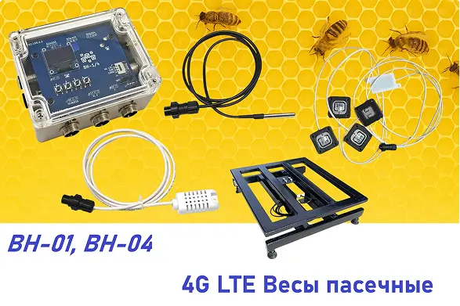

Віримо в перемогу ЗСУ!
Працюємо з 09:00 до 18:00 Пн-Пт.
Зараз можливі затримки з відправкою замовлення - в середньому 2-3 тиждні.
Медозбір як на долонях!

Пасічні ваги 4G LTE та Wi-Fi купити в Україні
-
Збір і передача параметрів
Наші пристрої BH-01 (для одного вулика) та BH-04 (для чотирьох вуликів) дозволяють у реальному часі фіксувати вагу, температуру та інші параметри пасіки. Дані автоматично передаються на веб-сервер bee.in.ua через 4G LTE або Wi-Fi, щоб ви могли стежити за медозбором онлайн. Інструкція >
-
Автономність
Пасічні ваги BH-01 і BH-04 спроєктовані для тривалої роботи без постійного обслуговування. Економне енергоспоживання та вбудований акумулятор забезпечують автономність і надійність — пристрій працює тижнями без підзарядки.
-
Віддалений контроль
Підтримка 4G LTE та Wi-Fi дозволяє встановлювати ваги практично в будь- якій точці України. Ви можете залишати вулики без постійної присутності та отримувати дані про стан пасіки з будь-якої країни, де є інтернет.